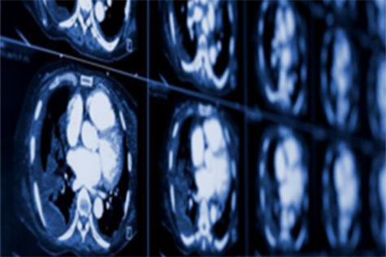

技术路线
纽卡尔是一个基于中国人大脑模型数据库，结合云计算和人工智能核心技术，精准评估大脑结构的影像学分析诊断平台。
预处理模块
首先是部署在医院的图像预处理设备。这一设备可以与医院的PACS 系统直接通信，访问相应的MRI图像。设备将利用自身所带的算法，将庞大的原始MRI图像进行压缩，并且完成滤波、配准和标准化的一系列 图像预处理过程。最后将处理好的较小的图像上传至本公司的中央服务 器进行诊断。
神经网络诊断模块
本公司的服务器将配备GPU或TPU进行神经网络计算，加速诊断过程。 服务器可以在数秒内将诊断结果返回给患者或医院。 得益于现代半导体工业的发展，人们逐步将深度学习的实现从软件层 面转移至更高效的硬件层面。本公司也拟在未来使用自己的机器视觉芯片，直接在医 院终端处理识别MRI图像，以实现更高效的诊断，
图像输入分类器
纽卡尔提出了一种基于深度学习的磁共振影响特征提取方法， 有效解决了传统的磁共振图像分类过程中需要人工选择特征输入致使分类精度不高的问题， 其通过多层卷积神经网络的非线性映射， 自动得到高度可分特征/特征组合用于分类，并且可以不断优化网络结构得 到更好的分类效果。
